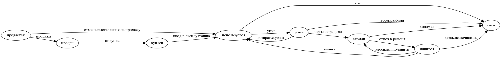

moto
Table of Contents
1 Введение
Создаем самый посещаемый ресурс по мототематике. Сначала в С-Пб, потом в Москве.
Задачи:
- Определить интересы целевой аудитории. Клубы, тусовки, небходимые сервисы
- Определить круг зарубежных ресурсов, с которых брать идеи
- Выйти на рекламодателей, определить возможную окупаемость и схемы монетизации
Отличия от других:
- Более демократичный ресурс чем мотобратан:
- модератор подписывается под баном
- можно баны обсуждать
- сообщество может отменить бан модератора!
- Больше возможностей:
- поиск людей (ник, имя, район)
- разделы общения:
- по районам - для совместных прохватов (север, юг, пригороды)
- кварталы по классу мотоциклов (спорбайки, эндуро, etc)
- новости, которые сегментирутся по кварталам.
- пользователь может подписаться на разные кварталы и сформировать ленту, а также на разных людей (иерархические теги)
- прохваты - календарь
- карта с маршрутами прохватов
- статистика дтп как на motositizen
- отметить темы как прочитанные
- личные сообщения сделать удобнее чем на мотобратане и с поиском
- Больше полезной информации о мотоциклах
- раздел с мануалами и поиском по мотоциклу
- раздел с поиском по запчастям
- раздел с "у кого спросить" по мотоциклу
- мотосервисы и отзывы о ремонтах
- Никакой надоедливой рекламы (баннеров)
- Разделы
- УСЛУГИ - в этом разделе пользователь должен увидеть, где какие гаражи можно арендовать, в каких мастерских можно починиться, где есть мотошколы, где зарегистрироваться или застраховаться и пр - то есть здесь надо собрать инфу обо всех услугах, которые могут пригодиться.
- ЗАПЧАСТИ - поиск запчастей как у частных так и по магазинам, отзывы с инфой где покупал эту запчасть https://www.louis.de/rubrik/motorradbekleidung-motorradhelme/1
- ПРОХВАТЫ
- БЛОГИ - сортировка новостей для удобства поиска (мало ли людям пригодится). Сортировать по источникам, например - СМИ (то есть газеты и проч известные сми), блоги, новости сайта.
- УГОНЫ
- ДТП
- ГАЛЕРЕЯ - как у харлея или тут http://www.dorna.com/dornacontents_wsbk.html
- Гонки
- Отчеты о путешествиях
- Брендованные страницы сервисов http://www.cobrausa.com/ https://www.louis.de/katalog/themen-welten/meine-werkstatt
- Статьи с кармой как на байкпосте
- Трансляции с мотобратана, байкпоста и других сайтов, например ручп, в части мотоциклистов
- Мотофлирт с функционалом полноценного сайта знакомств.
- Комментарии ко всему
- Продажа мотоциклов с функицоналом авто.ру и синдикацией с авто.ру и авито
- Юридическая помощь
- Отслеживание камер и радаров (за карму) (по карте)
- Карма
- отслеживать за что
- привлекать людей к оценке сколько дать за какое действие
- Связь с админами
- Система исправления орфографических (и не только) ошибок сначала для себя, а при подтверждении автором - и для других. С наглядностью диффа.
- Заметки по юзерам: http://vk.com/ekaterina.klochkova На всякий пожарный. Ближайшую неделю меня не будет вконтактике. У меня есть телефон: +79218857023 и почта: kait.klochkova@gmail.com.
- Поиск друзей с кем покататься Вводишь время, место и радиус, система находит друзей, и пишешь им - давай катать!
- Мототур "по бабам"
2 Стартап
идея. жизнь на пракачку, или как из омеги заальфаться для задротов. приложение на мобилку, которое раздает тебе очки за то что ты делаешь что-то душеспасительное и полезное. связано с форсквэром, считывалкой штрихкодов и прочей поебней.
ты логгишься туда и тебе рисуют аватарку тупого дрыща, нихуя не умеющего в этой жизни. у тебя 0 уровень.
ты получаешь очки, когда отслеживалка находит тебя в фитнес-клубах, центрах обучения и т.д. если ты там появляешься регулярно - очки удваиваются, пока не поломаешь цепь регулярности. то есть 20 посещений качалки дают 20 очков, если ходить как поппало, или 40, если не ломать периодичность 2 раза в неделю. небольшое количество баллов получаешь, когда покупаешь полезную жратву или развивающие книги, гантели. спорт товары, оплачиваешь услуги обучения, медицинские услуги и проч. для этого используется сканер штрихкодоов
растет уровень - растет необходимое количество баллов для достижения следующего. более ценные баллы можно получить, предоставляя приложению докозательства успехов - сертификаты об окончании курсов на курсере, сдача нормативов по бегу или прочей хуйне, которую отмеряет шагометр, встроенный в мобилку, чекины с других концов планеты.
задроты - они задроты везде, и зарабатывая баллы будут прокачивать свою жизнь.
идея для коммерциализации - заключать контракты с магазинами спорт товаров/ресторанами здорового питания/ центрами обучения, что бы при оплате их услуг получать бонусные баллы
Одоната по пути побочные квестики - прочитай вот эту книжку, ответь на вопросики по содержанию, получи полюсик сходи в такой музейчик, отметься - держи еще один плюсик. на этой неделе пройдет вот такое мероприятие, сходи, получи супер бонус, а мы денег за рекламу от организаторов ага. ток что бы этим заняться мне надо либо с работы уволиться либо бросить спать. я чо эт хуйню то придумала. я узнада что мой клуб очки начисляет за посещения. и обнаружила, что как только об этом узнала. частота моих посещений возрасла до 3х раз в неделю. мне эти балы не дают нихуя. не даж так. НИХУЯШЕНЬКИ но воспитанное годами мышление задрота не позволяет упустить возможность заработать баллы
есть проблема, связанная с тем, что человеки - в общем-то ленивые скоты. а задроты еще и хитрые ленивые скоты и нужна система контроля.
поэтому эту хуйню надо строить изначально с привязкой к кому-нибудь. идеальный вариант - начать с физического состояния задрота, т.к. это самая болезненная тема раз, измеряется проще всего два. берем в одну руку сеть качалок - тот же задрипанный алекс фитнес и привязываем всю эту лабуду туда. менеджменту говорим, что ща продажи вырастут так, что охуеете а так же у вас будет мощная обратная связь с клиентурой. чувак не только чекинится в зале, но так же имеет возможность раз в месяц подойти к тренеру и сказать "смари как я умею". тренер проверяет прогресс и говорит - молодца чувак. после чего на своей мобилке жамкает кнопулю, которая генерит qr-код. чувак считывает своей мобилой qr-код и переходит на след уровень. можно привязать персональные тренировки к этой лабуде. тренра жеж все равно дают роуд мап какй-то мол по понедельникам ты делаешь два притопа три прихлопа, во вторник дрочишь хуй, в четверг работаешь вот с такими мышцами вот такими упражнениями по столько подходов. для чувака который первый раз пришел в зал все это - китайская грамота и вылетает из ушей моментально (я вот в полном ахуе например была) - а тут тренер говорит, мол выполняешь программу с номером 15, вот те код - чувак его считывает мобилкой и имеет нормальное рассписание что и когда ему делать. и задно баллы получает.
делает это вместе с тренером - получает от тренера код, баллы удваиваются, в зале растут продажи персональных тренировок.
через нное количество времени получаем сеть посетителей сети клубов, которые радостно друг другу шлют фотаньки с бицухами и дают оценки тренерам (как бонус)
и тогда топаем в сеть школ, ну например иностранных языков. та же лабуда. получаешь баллы за то что приходишь на уроки, после экзамена и перехода на новый уровень владения языком получаешь от препода код. + мильен баллов и бэйджик. школам говорим - ща к вам прибежит клиентура в 100500 чуваков из качалок. потом туда же постепенно добавляем другие напрваления. автошколы, университеты, курсы повышения квалификации, оздоровительные программы и проч.
от всех организаций-участников получаем обратную связь по поводу того, как чувачки наши развиваются. каждый новый участник получает прирост клиентуры и охуенную рекламную площадку. участники игрули получают скидку на услугу компаний-участников. мы сидим и стрижем купоны. вин-вин
так как все участники реальны и действительно ходят во все эти хуйни, то мы будем единственной площадкой, которая может доказать, что отзывы, складирующиеся у нас (а люди ж те же голуби, им везде срать надо своим мнением) на 100% реальны, а не написаны пиарщиками или роботами
соответственно к нам начинают прибегать посторонние люди что бы получать объективную оченку мест в которые они хотят вписаться
3 Что улучшать
- Типы для полей state нужно задавать как перечисления
- Добавить AJAX и Comet
- Автоматизированная генерация интерфейса для просмотра и редактирования сущностей
- Забираем пользователей с других ресурсов
- Очищалка базы для каждого модуля должна лежать в модуле
- И сущности тоже туда переложить
4 Определения сущностей
4.1 Функции для кодогенерации сущностей
Эти функции будут кодогенерировать сущности и автоматы из таблиц с наименованием и типами полей внутри этого файла.
Чтобы емакс не запрашивал подтверждение на каждое исполнение кода, установим эту настройку:
(setq org-confirm-babel-evaluate nil)
Начнем с генерации кода из таблицы полей:
(defun gen-fields (rows) (let ((result)) (push "\n" result) (push (format " (%s\n" (butlast (car rows))) result) (mapcar #'(lambda (x) (push (format " %s\n" (butlast x)) result)) (butlast (cdr rows))) (push (format " %s)" (butlast (car (last rows)))) result) (mapconcat 'identity (reverse result) "")))
Теперь напишем код, который генерирует код для состояний конечного автомата:
(defun gen-states (rows) (let ((result) (hash (make-hash-table :test #'equal)) (states)) (dolist (elt rows nil) (puthash (cadr elt) nil hash) (puthash (cadr (cdr elt)) nil hash)) (maphash (lambda (k v) (push k states)) hash) (push "\n" result) (push " (" result) (dolist (elt (butlast states)) (push (format ":%s " elt) result)) (push (format ":%s)" (car (last states))) result) (mapconcat 'identity (reverse result) "")))
И добавим к этом генератор действий - т.е. переходов между состояниями:
(defun gen-actions (rows) (let ((result)) (push "\n" result) (let ((x (car rows))) (push (format " ((:%s :%s :%s)" (cadr x) (cadr (cdr x)) (car x)) result)) (if (equal 1 (length rows)) (push ")" result) (progn (push "\n" result) (mapcar #'(lambda (x) (push (format " (:%s :%s :%s)\n" (cadr x) (cadr (cdr x)) (car x)) result)) (cdr (butlast rows))) (let ((x (car (last rows)))) (push (format " (:%s :%s :%s))" (cadr x) (cadr (cdr x)) (car x)) result)))) (mapconcat 'identity (reverse result) "")))
Теперь у нас есть все необходимое, чтобы сгенерировать автомат:
(defun gen-automat (name docstring flds states) (let ((result)) (push (format "(define-automat %s \"Автомат %s\"" name docstring) result) (push (gen-fields flds) result) (push (gen-states states) result) (push (gen-actions states) result) (push ")\n" result) (mapconcat 'identity (reverse result) "")))
Или сущность
(defun gen-entity (name docstring flds) (let ((result)) (push (format "(define-entity %s \"Сущность %s\"" name docstring) result) (push (gen-fields flds) result) (push ")\n" result) (push "\n" result) (push (format "(make-%s-table)\n" name) result) (mapconcat 'identity (reverse result) "")))
Соберем все это в один файл:
<<gen_org_confirm>> <<gen_fields>> <<gen_states>> <<gen_actions>> <<gen_automat>> <<gen_entity>>
И загрузим его:
(load-file "generators.el")
4.2 Пользователи (user)
Для начала надо определиться, какие данные мы собираемся хранить о пользователях, и
какого типа будут эти данные. Типы данных задаем в формате Postmodern чтобы потом
сохранить данные в PostgreSQL
| field name | field type | note |
|---|---|---|
| id | serial | идентификатор |
| name | varchar | имя пользователя |
| password | varchar | пароль |
| varchar | емейл | |
| ts-create | bigint | время создания |
| ts-last | bigint | время когда был последний раз |
В нашей системе пользователь может существовать (или не существовать) в одном их нескольких состояний:
- Когда пользователь еще не зарегистрирован на сайте мы можем считать его
незарегистрированным (
unregistred) - После регистрации он автоматически становится залогиненным (
logged) - Пользователь может покинуть сайт и перейти в состояние
unlogged - Пользователь может забыть свой пароль, тогда мы должны выслать ему ссылку для
восстановления пароля (
sended) - И наконец, после восстановления пароля пользователь вновь становится залогиненным
(
logged)
Все эти переходы и состояния сведем в единую таблицу:
| action | from | to |
|---|---|---|
| registration | unregistred | logged |
| unregistration | logged | unregistred |
| enter | unlogged | logged |
| leave | logged | unlogged |
| forgot | unlogged | sended |
| remember | sended | logged |
Теперь мы можем полностью описать поведение пользователя как конечный автомат:

Теперь определим функции, которые вызываются на переходах из одного состояния в другое
(defun registration () "unregistred -> logged" ) (defun unregistration () "logged -> unregistred" ) (defun enter () "unlogged -> logged" ) (defun leave () "logged -> unlogged" ) (defun forgot () "unlogged -> sended" ) (defun remember () "sended -> logged" )
4.3 Роли (role)
Роли определяют набор сценариев, которые пользователь выполняет на сайте. Функционал, который выполняют сценарии запрашивает разрешение на выполнение действий, которое опирается на роль, присвоенную пользователю. Пользователь может иметь только одну роль или не иметь ее вовсе.
Роль является простой сущностью и не имеет состояния.
| field name | field type | note |
|---|---|---|
| id | serial | идентификатор |
| name | (or db-null varchar) | имя роли |
Добавляем к полям пользователя еще одно поле, которое будет указывать на идентификатор роли, которую имеет пользователь:
| field name | field type | note |
|---|---|---|
| role-id | (or db-null integer) | идентификатор роли |
Создадим необходимые роли:
(make-role :name "admin") (make-role :name "manager") (make-role :name "moderator") (make-role :name "editor") (make-role :name "robot")
4.4 Группы (group, user2group)
Группы пользователей определяют набор операций, которые пользователь может выполнять над объектами системы. В отличие от ролей, один пользователь может входить в несколько групп или не входить ни в одну из них.
Группа является простой сущностью и не имеет состояния.
| field name | field type | note |
|---|---|---|
| id | serial | идентификатор |
| name | varchar | имя группы |
Создадим необходимые группы:
(make-group :name "oldman") (make-group :name "newboy") (make-group :name "veteran") (make-group :name "traveler") (make-group :name "troll")
Теперь создадим таблицу связи, которая свяжет пользователей и группы:
| field name | field type | note |
|---|---|---|
| id | serial | идентификатор |
| user-id | integer | идентификатор пользователя |
| group-id | integer | идентификатор группы |
4.5 Сообщения (msg)
О сообщениях мы знаем только от кого они посылаются, кому и собственно текст сообщения. Его наверно не стоит ограничивать. По идее как посылающий, так и принимающий может удалить сообщение (пометить как удаленное), для этого мы используем отдельные флаги.
| field name | field type | note |
|---|---|---|
| id | serial | идентификатор |
| snd-id | integer | пользователь, который послал сообщение |
| rcv-id | integer | пользователь, который получает сообщение |
| msg | varchar | сообщение |
| ts-create | bigint | время создания |
| ts-delivery | bigint | время доставки |
Еще сообщение может быть доставлено или недоставлено.
| action | from | to |
|---|---|---|
| delivery | undelivered | delivered |
Теперь определим функции, которые вызываются на переходах
(defun delivery () "undelivered -> delivered" )
4.6 Очереди (que, quelt)
Очереди используются для фолловинга и прочей подписки на обновления.
Нам нужна некоторая инфраструктура чтобы абстрагироваться от операций управления очередями, подписчиками и посылки сообщений. Потом ее можно будет изменить для поддержки RabbitMQ, Mbus или ZMQ или даже использовать все их одновременно для разных целей.
Очередь является простой сущностью и не имеет состояния.
| field name | field type | note |
|---|---|---|
| id | serial | идентификатор |
| name | varchar | имя очереди |
Нам понадобится сущность элемента очереди, назовем его quelt. Элемент очереди является
простой сущностью и не имеет состояния.
| field name | field type | note |
|---|---|---|
| id | serial | идентификатор |
| que-id | integer | идентификатор очереди |
| text | varchar | содержимое |
Создадим необходимые очереди:
;; (make-que :name "admin") ;; (make-que :name "manager") ;; (make-que :name "moderator") ;; (make-que :name "robot")
4.7 Аватары (avatar)
Пользователи имеют неопределенное кол-во аватарок, разного размера, для которых мы осуществляем хранение в оригинальном размере, масштабирование и хранение отмасштабированных превьюшек.
| field name | field type | note |
|---|---|---|
| id | serial | идентификатор |
| user-id | integer | идентификатор пользователя |
| name | varchar | имя пользователя |
| origin | varchar | путь к файлу оригинального размера |
| ts-create | bigint | время создания |
Одна из автарок может быть активной в данный момент.
| action | from | to |
|---|---|---|
| avatar-off | active | inactive |
| avatar-on | inactive | active |
Теперь определим функции, которые вызываются на переходах
(defun avatar-off () "active -> inactive" ) (defun avatar-on () "inactive -> active" )
4.8 Мотоциклы (moto)
Здесь все, что относится к мотоциклам пользователей. Мы хотим, чтобы пользователи не только могли рассказать о своих мотоциклах, но и купить/продать их, убедившись в легальности и нескрученном пробеге, изучив историю и динамику цен.
В начале и конце сезона можно организовывать акции по контролю пробега например, за которые начислять карму.
Для начала, стандартные поля - марка, модель, цвет и год выпуска.
У каждого мотоцикла также есть цена за которую владелец готов его продать.
Поля, которые пользователь может заполнить по желанию - описание мотоцикла, описание тюнинга.
Поля, которые не показываются всем подряд: номерной знак, номер рамы, номер двигателя - все это может пригодиться для проверки мотоцикла на легальность.
| field name | field type | note |
|---|---|---|
| id | serial | идентификатор |
| vendor-id | (or db-null integer) | идентификтор фирмы-производителя |
| model-id | (or db-null integer) | идентификтор модели |
| color-id | (or db-null integer) | идентификтор цвета |
| year | (or db-null integer) | год выпуска |
| price | (or db-null integer) | цена |
| plate | (or db-null varchar) | номерной знак |
| vin | (or db-null varchar) | vin-номер |
| frame-num | (or db-null varchar) | номер рамы |
| engine-num | (or db-null varchar) | номер двигателя |
| pts-data | (or db-null varchar) | данные птс (раскрыть) |
| desc | (or db-null varchar) | описание мотоцикла |
| tuning | (or db-null varchar) | описание тюнинга |
В нашей системе мотоцикл может существовать (или не существовать) в одном их нескольких состояний:
используетсяМотоцикл на ходу, может быть выставлен на продажу, разбит, сломан или угнан.продаетсяМотоцикл может быть продан. В этом состоянии мотоцикл находится в поиске. Хозяин может отменить продажу мотоцикла, если его слишком достали звонками, например. Хозяин может осуществить продажу, в этом случае, мотоцикл переходит в состояниепродан.продан. Продавец ставит этот статус, расставаясь с мотоциклом.куплен. Покупатель ставит этот статус, получая мотоциклсломанПоломан настолько, что поломка препятствует эксплуатации. Отсюда есть только путь в сервис или на разборку. Конечно ломаный мотоцикл могут еще украсть или продать, но мы не продаем ломаные мотоциклы, это уже в раздел запчастей.угнанУкраден (в угоне). Дальше в дневнике может быть только где его видели. Может быть возвращен владельцу, а также сломан или разбит ворами.чинится(в сервисе - эксплуатация невозможна). Этот статус устанавливаетservice-manпри получени мотоцикла. При переводе мотоцикла обратно в эксплуатацию по идее должен занести в дневник список выполненных работ и сумму оплаты. Однако иногда починить мотоцикл не удается, тогда он остается сломанным, однако в сервисной книжке появляется запись о попытке починить. Иногда в процессе ремонта оказывается, что дешевле объявить мотоцикл хламом, чем чинить.хламРазбит (и восстановлению не подлежит)
Все эти состояния и переходы между ними сведем в единую таблицу:
| action | from | to |
|---|---|---|
| выставление.на.продажу | используется | продается |
| сломался | используется | сломан |
| крэш | используется | хлам |
| угон | используется | угнан |
| воры.повредили | угнан | сломан |
| воры.разбили | угнан | хлам |
| отмена.выставления.на.продажу | продается | используется |
| отвоз.в.ремонт | сломан | чинится |
| доломал | сломан | хлам |
| неосилил.починить | чинится | сломан |
| починил | чинится | используется |
| здесь.не.починишь | чинится | хлам |
| продажа | продается | продан |
| покупка | продан | куплен |
| ввод.в.эксплуатацию | куплен | используется |
| возврат.с.угона | угнан | используется |
Теперь мы можем полностью описать поведение пользователя как конечный автомат:

Теперь определим функции, которые вызываются на переходах
(defun |выставление.на.продажу| () "используется -> продается") (defun |сломался| () "используется -> сломан") (defun |крэш| () "используется -> хлам") (defun |угон| () "используется -> угнан") (defun |воры.повредили| () "угнан -> сломан") (defun |воры.разьебали| () "угнан -> хлам") (defun |отмена.выставления.на.продажу| () "продается -> используется") (defun |отвоз.в.ремонт| () "сломан -> чинится") (defun |доломал| () "сломан -> хлам") (defun |неосилил.починить| () "чинится -> сломан") (defun |починил| () "чинится -> используется") (defun |здесь.не.починишь| () "чинится -> хлам") (defun |продажа| () "продается -> продан") (defun |покупка| () "продан -> куплен") (defun |ввод.в.эксплуатацию| () "куплен -> используется") (defun |возврат.с.угона| () "угнан -> используется")
Не забываем про аватар, который показывается на страничке пользователя и про набор фоток
этого мотоцикла, доступный через таблицу связи moto2motophoto. Аватаром является фотка
мотоцикла, со статусом active.
Поскольку у мотоцикла может быть несколько владельцев, и один пользователь может владеть
несколькими мотоциклами, то мы связываем мотоцикл и его владельца через таблицу связи с
диапазоном дат - moto2user, при этом, если даты пересекаются - то два пользователя,
очевидно, владеют мотоциклами вместе. Таким образом мы можем отследить историю
мотоцикла, с момента его появления, до разборки. Учитывая планируемую "технологическую
репутацию" пользователей это поможет сделать вывод о том, как с мотоциклом обращались.
Дневник мотоцикла. Что случалось с мотоциклом - поломки, участие в прохватах,
поездках-путешествиях, ремонт в сервисах - все это привязывается из motodiary. Это
позволяет еще и отслеживать траты на мотоцикл.
Также у каждого мотоцикла есть wish-list - то, что хозяин хотел бы приобрести для
него. Мы храним это в таблице motowish, которая содержит ссылку на мотоцикл и его
владельца, а также на товар, если он существует в базе товаров.
(in-package #:moto) ;; (loop :for item :in (with-connection *db-spec* ;; (query ;; (:limit ;; (:select 'motos ;; :from 'bratan ;; :where (:not (:like "" 'motos))) ;; 999999999999))) :do ;; (format t "~%~A" ;; (ppcre:split "\\s+" (car item))))
4.9 Цвет (color)
Цвета мотоциклов - простая сущность и не имеет состояния.
| field name | field type | note |
|---|---|---|
| id | serial | идентификатор |
| name | varchar | имя цвета |
4.10 Производитель (vendor)
Цвета мотоциклов - простая сущность и не имеет состояния.
| field name | field type | note |
|---|---|---|
| id | serial | идентификатор |
| name | varchar | имя производителя |
4.11 Братан (bratan)
Наш пользователь может быть зарегистрирован на http://motobratan.ru/
Чтобы предоставлять ему разнообразные сервисы, отсутстующие на на мотобратане, мы отражаем профили пользователя мотобратана у себя. Наш пользователь может связать свой профиль с профилем на мотобратане.
Братан является простой сущностью и не имеет состояния.
| field name | field type | note |
|---|---|---|
| id | serial | идентификатор |
| bratan-id | (or db-null integer) | идентификтор на мотобратане |
| ts-last-upd | (or db-null bigint) | время последнего обновления данных |
| name | varchar | имя |
| fio | (or db-null varchar) | ФИО |
| last-seen | (or db-null varchar) | последнее посещение мотобратана |
| addr | (or db-null varchar) | район и город |
| tsreg | (or db-null varchar) | время регистрации |
| age | (or db-null varchar) | возраст |
| birthday | (or db-null varchar) | день рождения |
| blood | (or db-null varchar) | группа крови |
| moto-exp | (or db-null varchar) | стаж мотовождения |
| phone | (or db-null varchar) | телефон |
| activityes | (or db-null varchar) | активность |
| interests | (or db-null varchar) | интересы |
| photos | (or db-null varchar) | фотографии |
| avatar | (or db-null varchar) | аватар |
| motos | (or db-null varchar) | мотоциклы |
5 События
Мы используем события, чтобы отслеживать и логгировать изменения в системе, которые происходят в ответ на действия внешних сил.
;;;; events.lisp (in-package #:moto)
6 Interface
Соберем веб-интерфейс:
;;;; iface.lisp (in-package #:moto) ;; Меню <<menu>> ;; Враппер веб-интерфейса <<with_wrapper>> ;; Хелпер форм <<frm>> ;; Страницы <<iface_contents>>
6.1 Главное меню
(in-package #:moto) (defun menu () (remove-if #'null (list "<a href=\"/users\">Пользователи</a>" "<a href=\"/roles\">Роли</a>" "<a href=\"/groups\">Группы</a>" (when (null *current-user*) "<a href=\"/reg\">Регистрация</a>") (when (null *current-user*) "<a href=\"/login\">Логин</a>") (when (null *current-user*) "Больше возможностей доступно залогиненным пользоватям") (when *current-user* (format nil "<a href=\"/user/~A\">Мой профиль</a>" *current-user*)) (when *current-user* "<a href=\"/logout\">Выход</a>") (when *current-user* "<a href=\"/im\">Сообщения</a>") (when *current-user* "<a href=\"/load\">Загрузка данных</a>") "<a href=\"/\">TODO: Простой поиск по ЖК</a>" "<a href=\"/\">TODO: Расширенный поиск по ЖК</a>" )))
6.2 Главная страница
(in-package #:moto) (restas:define-route main ("/") (with-wrapper "<h1>Главная страница</h1>" ))
6.3 Список пользователей
(in-package #:moto) (restas:define-route allusers ("/users") (with-wrapper (concatenate 'string "<h1>Все пользователи</h1>" (tbl (with-collection (i (all-user)) (tr (td (format nil "<a href=\"/user/~A\">~A</a>" (id i) (id i))) (td (name i)) (td (password i)) (td (email i)) (td (state i)) ;; (td (role-id i)) )) :border 1) "<h2>Новый пользователь</h2>" (frm (tbl (list (row "Имя" (fld "name")) (row "Email" (fld "email")) (row "Пароль" (fld "password")) (row "" (submit "Создать")))))))) (restas:define-route allusers-ctrl ("/users" :method :post) (with-wrapper (let* ((p (alist-to-plist (hunchentoot:post-parameters*)))) (make-user :name (getf p :name) :email (getf p :email) :password (getf p :password) :ts-create (get-universal-time) :ts-last (get-universal-time) ) "Пользователь создан")))
6.4 Список ролей
(in-package #:moto) (restas:define-route allroles ("/roles") (with-wrapper (concatenate 'string "<h1>Роли пользователей</h1>" "Роли определяют набор сценариев, которые пользователь выполняет на сайте. Функционал, который выполняют сценарии запрашивает разрешение на выполнение действий, которое опирается на роль, присвоенную пользователю. Пользователь может иметь только одну роль или не иметь ее вовсе.<br /><br />" (tbl (with-collection (i (all-role)) (tr (td (format nil "<a href=\"/role/~A\">~A</a>" (id i) (id i))) (td (name i)))) :border 1) "<h2>Новая роль</h2>" (frm (tbl (list (row "Название" (fld "name")) (row "" (submit "Создать")))))))) (restas:define-route allroles-ctrl ("/roles" :method :post) (with-wrapper (let* ((p (alist-to-plist (hunchentoot:post-parameters*)))) (make-role :name (getf p :name)) "Роль создана")))
6.5 Список групп
(in-package #:moto) (restas:define-route allgroups ("/groups") (with-wrapper (concatenate 'string "<h1>Группы пользователей</h1>" "Группы пользователей определяют набор операций, которые пользователь может выполнять над объектами системы. В отличие от ролей, один пользователь может входить в несколько групп или не входить ни в одну из них. <br /><br />" (tbl (with-collection (i (all-group)) (tr (td (format nil "<a href=\"/group/~A\">~A</a>" (id i) (id i))) (td (name i)) (td (frm ;; (hid "act" :value "del") ;; (hid "id" :value (id i)) (submit "Удалить"))))) :border 1) "<h2>Новая группа</h2>" (frm (tbl (list (row "Название" (fld "name")) (row "" (submit "Создать")))))))) (restas:define-route allgroups-ctrl ("/groups" :method :post) (with-wrapper (let* ((p (alist-to-plist (hunchentoot:post-parameters*)))) (make-group :name (getf p :name)) "Группа создана")))
6.6 Страничка пользователя
(in-package #:moto) (restas:define-route user ("/user/:userid") (with-wrapper (let* ((i (parse-integer userid)) (u (get-user i))) (if (null u) "Нет такого пользователя" (format nil "~{~A~}" (list (format nil "<h1>Страница пользователя ~A</h1>" (id u)) (format nil "<h2>Данные пользователя ~A</h2>" (name u)) (tbl (with-element (u u) (row "Имя пользователя" (name u)) (row "Пароль" (password u)) (row "Email" (email u))) :border 1) )))))) (restas:define-route user-ctrl ("/user/:userid" :method :post) (with-wrapper (let* ((p (alist-to-plist (hunchentoot:post-parameters*)))) (cond ((getf p :addsum) ) ((getf p :follow) ) ((getf p :neworder) )))))
7 Модули
7.1 Cущности, автоматы и их тесты
Опишем из чего состоит модуль, это описание станет частью asd-файла:
(:module "entity" :serial t :pathname "mod" :components ((:file "entity")))
Собственно описание модуля вынесено в файл entity.html
7.2 Авторизация
Опишем из чего состоит модуль, это описание станет частью asd-файла:
(:module "auth" :serial t :pathname "mod/auth" :components ((:static-file "auth-tpl.htm") (:file "auth")))
Как пользователь, я хочу иметь возможность ввести логин и пароль чтобы получить доступ к закрытому от неавторизованных пользователей функционалу.
Собственно описание модуля вынесено в файл auth.html
7.3 Очереди
Опишем из чего состоит модуль, это описание станет частью asd-файла:
(:module "que" :serial t :pathname "mod/que" :components ((:file "que")))
Как пользователь, я хочу иметь возможность ввести логин и пароль чтобы получить доступ к закрытому от неавторизованных пользователей функционалу.
Собственно описание модуля вынесено в файл que.html
7.4 Сообщения
Опишем из чего состоит модуль, это описание станет частью asd-файла:
(:module "msg" :serial t :pathname "mod/msg" :components ((:static-file "msg-tpl.htm") (:file "msg-prepare") (:file "msg")))
Собственно описание модуля вынесено в файл msg.html
7.5 Trend
Опишем из чего состоит модуль, это описание станет частью asd-файла:
(:module "trend" :serial t :pathname "mod/trend" :components ((:static-file "trend-tpl.htm") (:file "trend-prepare") (:file "entityes") (:file "trend")))
Собственно описание модуля вынесено в файл trend.html
7.6 Граббер пользователей мотобратана
Опишем из чего состоит модуль, это описание станет частью asd-файла:
(:module "bratan" :serial t :pathname "mod/bratan" :components ((:file "bratan")))
Собственно описание модуля вынесено в файл bratan.html
7.7 TODO Граббер тем мотобратана
7.8 TODO Посты
7.9 TODO Багзилла
7.10 TODO Шаринг
8 Сборка
8.1 Утилиты
;;;; util.lisp (in-package #:moto) <<get_obj_data>> <<make_clause_list>> <<err_bprint_macro>> <<dbgout>> <<alist_plist>> <<with_wrapper>> <<frm>> <<with_collection>> <<with_element>> <<replace_all>> <<explore_dir>>
;; Превращает инициализированные поля объекта в plist (defun get-obj-data (obj) (let ((class (find-class (type-of obj))) (result)) (loop :for slot :in (closer-mop:class-direct-slots class) :collect (let ((slot-name (closer-mop:slot-definition-name slot))) (when (slot-boundp obj slot-name) (setf result (append result (list (intern (symbol-name slot-name) :keyword) (funcall slot-name obj))))))) result))
;; Assembly WHERE clause (defun make-clause-list (glob-rel rel args) (append (list glob-rel) (loop :for i :in args :when (and (symbolp i) (getf args i) (not (symbolp (getf args i)))) :collect (list rel i (getf args i)))))
;; Макросы для корректного вывода ошибок (defmacro bprint (var) `(subseq (with-output-to-string (*standard-output*) (pprint ,var)) 1)) (defmacro err (var) `(error (format nil "ERR:[~A]" (bprint ,var))))
;; Отладочный вывод (defparameter *dbg-enable* t) (defparameter *dbg-indent* 1) (defun dbgout (out) (when *dbg-enable* (format t (format nil "~~%~~~AT~~A" *dbg-indent*) out))) (defmacro dbg (frmt &rest params) `(dbgout (format nil ,frmt ,@params))) ;; (macroexpand-1 '(dbg "~A~A~{~A~^,~}" "zzz" "34234" '(1 2 3 4)))
(defun anything-to-keyword (item) (intern (string-upcase (format nil "~a" item)) :keyword)) (defun alist-to-plist (alist) (if (not (equal (type-of alist) 'cons)) alist ;;else (loop :for (key . value) :in alist :nconc (list (anything-to-keyword key) value))))
Враппер управляет сесииями и выводит все в основной (root-овый) шаблон
(in-package #:moto) (defmacro with-wrapper (&body body) `(progn (hunchentoot:start-session) (let* ((*current-user* (hunchentoot:session-value 'current-user)) (retval) (output (with-output-to-string (*standard-output*) (setf retval ,@body)))) (declare (special *current-user*)) (tpl:root (list :title "title" :content (format nil "~{~A~}" (list (tpl:dbgblock (list :dbgout output)) (tpl:userblock (list :currentuser (if (null *current-user*) "none" *current-user*))) (if *current-user* (tpl:msgblock (list :msgcnt (get-undelivered-msg-cnt *current-user*))) "") (tpl:menublock (list :menu (format nil "~{~A<br />~}" (menu)))) (tpl:retvalblock (list :retval retval)))))))))
Для того чтобы генерировать и выводить элементы форм, напишем хелперы:
(in-package #:moto) (defun input (type &key name value) (format nil "~%<input type=\"~A\"~A~A/>" type (if name (format nil " name=\"~A\"" name) "") (if value (format nil " value=\"~A\"" value) ""))) ;; (input "text" :name "zzz" :value 111) ;; (input "submit" :name "submit-btn" :value "send") (defun fld (name &optional (value "")) (input "text" :name name :value value)) (defun btn (name &optional (value "")) (input "button" :name name :value value)) (defun hid (name &optional (value "")) (input "hidden" :name name :value value)) (defun submit (&optional value) (if value (input "submit" :value value) (input "submit"))) (defmacro row (title &body body) `(format nil "~%<tr>~%<td>~A</td>~%<td>~A~%</td>~%</tr>" ,title ,@body)) ;; (row "thetitrle" (submit)) (defun td (dat) (format nil "~%<td>~%~A~%</td>" dat)) (defun tr (&rest dat) (format nil "~%<tr>~%~{~A~}~%</tr>" dat)) ;; (tr "wfewf") ;; (tr "wfewf" 1111) (defun frm (contents &key name (method "POST")) (format nil "~%<form method=\"~A\"~A>~{~A~}~%</form>" method (if name (format nil " name=\"~A\"" name) "") (if (consp contents) contents (list contents)))) ;; (frm "form-content" :name "nnnnn") (defun tbl (contents &key name border) (format nil "~%<table~A~A>~{~A~}~%</table>" (if name (format nil " name=\"~A\"" name) "") (if border (format nil " border=\"~A\"" border) "") (if (consp contents) contents (list contents)))) ;; (tbl (list "zzz") :name "table") ;; (frm (tbl (list (row "username" (fld "user")))))
Чтобы выводить коллекции напишем макрос
(defmacro with-collection ((item collection) &body body) `(loop :for ,item :in ,collection :collect ,@body))
Чтобы выводить элемент коллекции напишем макрос
(defmacro with-element ((item elt) &body body) `(let ((,item ,elt)) (list ,@body)))
Репласер
(defun replace-all (string part replacement &key (test #'char=)) "Returns a new string in which all the occurences of the part is replaced with replacement." (with-output-to-string (out) (loop with part-length = (length part) for old-pos = 0 then (+ pos part-length) for pos = (search part string :start2 old-pos :test test) do (write-string string out :start old-pos :end (or pos (length string))) when pos do (write-string replacement out) while pos)))
(defun explore-dir (path) (let ((raw (directory path)) (dirs) (files)) (mapcar #'(lambda (x) (if (cl-fad:directory-pathname-p x) (push x dirs) (push x files))) raw) (values dirs files raw)))
8.2 Шаблоны
Шаблоны будем вставлять в отдельный файл src/templates.htm
// -*- mode: closure-template-html; fill-column: 140 -*- {namespace tpl} {template root} <!DOCTYPE html PUBLIC "-//W3C//DTD XHTML 1.0 Strict//EN" "http://www.w3.org/TR/xhtml1/DTD/xhtml1-strict.dtd">{\n} <html xmlns="http://www.w3.org/1999/xhtml" xml:lang="en" lang="en">{\n} <head>{\n} <title>{$headtitle}</title>{\n} <meta http-equiv="Content-Type" content="text/html; charset=utf-8" />{\n} <link rel="stylesheet" type="text/css" media="screen" href="/css/style.css" />{\n} <link rel="Shortcut Icon" type="image/x-icon" href="/img/favicon.ico" />{\n} <script type="text/javascript" src="/js/jquery-1.5.2.min.js"></script> <script type="text/javascript" src="/js/comment.js"></script> </head>{\n} <body id="top">{\n} {$content | noAutoescape}{\n} </body>{\n} </html>{\n} {/template} {template dbgblock} <div style="border: 1px solid red; background-color: #CCCCCC; padding: 2px 20px 2px 20px;"> <pre>{$dbgout | noAutoescape}</pre> </div> {/template} {template userblock} <div style="border: 1px solid red; background-color: #CCCCCC; padding: 2px 20px 2px 20px;"> <pre>Текущий пользователь: {$currentuser | noAutoescape}</pre> </div> {/template} {template retvalblock} <div style="border: 1px solid red; background-color: #FFFFFF; padding: 2px 20px 2px 20px;"> {$retval | noAutoescape} </div> {/template} {template msgblock} <div style="border: 1px solid red; background-color: #FFFFFF; padding: 2px 20px 2px 20px;"> Новых сообщений: {$msgcnt | noAutoescape} </div> {/template} {template menublock} <div style="border: 1px solid red; background-color: #FFFFFF; padding: 2px 20px 2px 20px;"> {$menu | noAutoescape} </div> {/template}
8.3 Глобальные определения
(in-package #:moto) ;; Подключение к базе данных (defvar *db-name* "ylg_new") (defvar *db-user* "ylg") (defvar *db-pass* "6mEfBjyLrSzlE") (defvar *db-serv* "localhost") (defvar *db-spec* (list "ylg_new" "ylg" "6mEfBjyLrSzlE" "localhost")) ;; clear db (let ((tables '("user" "role" "group" "user2group" "avatar" "msg" "flat" "que" "quelt" "bratan" "cmpx" "plex"))) (flet ((rmtbl (tblname) (when (with-connection *db-spec* (query (:select 'table_name :from 'information_schema.tables :where (:and (:= 'table_schema "public") (:= 'table_name tblname))))) (with-connection *db-spec* (query (:drop-table (intern (string-upcase tblname)))))))) (loop :for tblname :in tables :collect (rmtbl tblname))))
8.4 Каркас проекта
Для генерации "с чистого листа" необходимы функции генерации сущностей, они лежат в
файле generators.el
Чтобы их подключить - можно сделать M-x load-file generators.el в emacs-е.
Эти функции помещаются в generators.el при tangle и редактировать их можно в
соответствующем разделе этого файла. Для успешной генерации сущностей, они должны быть
загружены в emacs.
Файл prepare должен идти до файла util и остальных, так как в нем компилируются
шаблоны, от которых зависит util
Файл globals должен идти до файла entity так как в нем происходит подключение к базе
данных, которое используют тесты сущностей и автоматов.
;;;; moto.asd (asdf:defsystem #:moto :serial t :pathname "src" :depends-on (#:closer-mop #:postmodern #:anaphora #:cl-ppcre #:restas #:restas-directory-publisher #:closure-template #:cl-json #:cl-base64 #:drakma #:split-sequence) :description "site for bikers" :author "rigidus" :version "0.0.3" :license "GPLv3" :components ((:file "package") ;; файл пакетов (:static-file "templates.htm") (:file "prepare") ;; подготовка к старту (:file "util") ;; файл с утилитами (:file "globals") ;; файл с глобальными определеями ;; Модуль сущностей, автоматов и их тестов <<mod_entity>> (:file "entityes") ;; Сущности и автоматы (:file "moto") ;; стартовый файл ;; Модуль авторизации (зависит от определения сущностей в стартовом файле) <<mod_auth>> ;; Модуль очередей <<mod_que>> ;; Модуль сообщений <<mod_msg>> ;; Модуль trend <<mod_trend>> ;; Модуль мотобратан <<mod_bratan>> (:file "events") ;; события системы (:file "iface") ;; файл веб-интерфейса ))
8.5 Пакеты
Соберем весь код в пакет:
;;;; package.lisp (restas:define-module #:moto (:use #:cl #:closer-mop #:postmodern #:anaphora #:hunchentoot) (:shadowing-import-from #:closer-mop #:defclass #:defmethod #:standard-class #:ensure-generic-function #:defgeneric #:standard-generic-function #:class-name))
8.6 Сущности и автоматы
Соберем все сущности и автоматы
8.6.1 Пользователи
8.6.2 Роли
8.6.3 Группы
8.6.4 Сообщения
8.6.5 Очереди
8.6.6 Аватары
8.6.7 Мотоциклы
8.6.8 Цвета
8.6.9 Производители
8.6.10 Братаны
8.7 Подготовка к старту
Подготовка включает в себя загрузку всех необходимых библиотек, компиляцию шаблонов, и, возможно, инициализацию окружения.
8.8 Точка входа
;;;; moto.lisp (in-package #:moto) ;; start (restas:start '#:moto :port 9997) (restas:debug-mode-on) ;; (restas:debug-mode-off) (setf hunchentoot:*catch-errors-p* t)
8.9 Readme
Этот документ отвечает на вопросы: - Что нужно сделать чтобы собрать проект - Что нужно сделать чтобы запустить собранный проект - Как установить и настроить Postgres - Зачем это все Можно запустить проект, не собирая его, если вы просто хотите попробовать. Но в этом нет фана, потому что все интересное именно в литературном программировании и генерации кода. * Сборка На момент, когда вы начнете это делать, у вас должны стоять: - emacs (http://www.gnu.org/software/emacs/) - git (http://git-scm.com/) - sbcl (http://sbcl.org/) - quicklisp (http://quicklisp.org/) - postgresql (http://www.postgresql.org/) Их установка, как правило, тривиальна, поэтому не будет здесь описываться. Перед тем, как начать сборку, создаем каталог, где будет все лежать и переходим в него: =mkdir ~/repo= =cd ~/repo= ** Orgmode Находясь в каталоге =~/repo=, скачиваем последнюю версию =org-mode= - расширения, которое уже стоит в емаксе, но, к сожалению, часто не самой свежей версии. В той версии, которую я использую, поменялся способ работы с org-tables, поэтому я рекомендую забирать версию с моего репозитория: =git-clone https://github.com/rigidus/org-mode.git= Переходим в появившийся каталог и собираем: =cd org-mode/lisp= =make autoloads= Открываем файл конфигурации emacs =~/.emacs.d/init.el= и прописываем собранный org-mode: =;; OrgMode http://orgmode.org/manual/Installation.html= =(add-to-list 'load-path "/home/rigidus/repo/org-mode/lisp")= =(require 'org-install)= Возвращаемся в исходный каталог: =cd ~/repo= ** Проект Скачиваем последнюю версию проекта: =cd ~/repo= =git-clone https://github.com/rigidus/moto.git= Открываем =~/repo/moto/doc.org= в emacs-e Загружаем генераторы: =M-x load-file= =~/repo/moto/generators.el= Без этого шага при генерации не найдутся некоторые необходимые функции, что вызовет ошибку генерации. Выполняем генерацию кода (org-babel-tangle) в открытом в emacs-е файле =~/repo/moto/doc.org=, нажимая комбинацию клавишь =C-c C-v t= Сгенерируется множество файлов проекта, в основном, в каталоге =~/repo/moto/src= Выполняем генерацию документации в формате html (org-export) в открытом в emacs-е файле =~/repo/moto/doc.org=, нажимая комбинацию клавиш =C-c C-e h= Сгенерируется файл документации =~/repo/moto/doc.html= Аналогичным образом можно поступать со всеми файлами модулей - это файлы с расширением =org=, которые лежат в корневом каталоге =~/repo/moto/= Если понадобится изменить процесс генерации, то функции, которые за него отвечают, лежат в "Определения сущностей" -> "Функции для кодогенерации сущностей" * Запуск Чтобы запустить проект, необходимо иметь: - sbcl - quicklisp Необходимо, чтобы quicklisp мог найти систему проекта. Для этого в =~/.sbclrc= дописываем следущий код #+BEGIN_SRC lisp #+quicklisp (mapcar #'(lambda (x) (pushnew x ql:*local-project-directories*)) (list #P"~/repo/moto/" )) #+END_SRC - postgres Эти данные для входа лежат в ~/repo/moto/doc.org в разделе "Глобальные определения" - Пользователь postgres - Базу данных Обеспечив выполнение этих условий, заходим в =emacs=, набираем =M-x slime= и в открывшемся буфере =(ql:quickload "moto")= Все должно заработать. Если нет - связывайтесь со мной. Чуть не забыл, веб-интерфейс размещен на порту 9997 * Установка и настройка Postgres #+BEGIN_COMMENT TODO сделать линки на получение значений с глобальных определений doc.org, если возможно #+END_COMMENT В =~/repo/moto/doc.org= в секции "Глобальные определения" написаны имя базы данных, логин и пароль Для систем Ubuntu/Debian: #+BEGIN_SRC bash sudo apt-get install postgresql postgresql-contrib postgresql-client sudo -i -u postgres postgres$ createuser --interactive .... postgres$ createdb DB_NAME postgres$ psql -d DB_NAME #+END_SRC В консоль postrges ввести: #+BEGIN_SRC psql ALTER USER ylg PASSWORD '...'; \q #+END_SRC См. туториал https://www.digitalocean.com/community/tutorials/how-to-install-and-use-postgresql-on-ubuntu-14-04 * Зачем это все Это все было задумано и написано (и пишется в данный момент) как исследование ряда подходов в программировании в применении к конкретным практическим задачам. Ну и ради общественной пользы, понимаемой очень широко, включая как пользу от самого продукта, так и пользу от исследуемых технологий и приемов их применения. Весь код лицензируется под свободной лицензией GPLv3 и вы вправе реализовывать все связанные с этим свободы. Контрибьюторы приветствуются, не только в написании кода, но и в привлечении пользователей, изучении технологий, тестировании и критике идей. Если есть какой-то вопрос или непонятный момент - не стесняйтесь писать прямо в гитхаб.
9 Идеи
Необходимы заметки одного пользователя о другом. И шаринг их для группы лиц
http://www.motobratan.ru/motoprogress/230.html Флип-чарт - как чопперасты видят: спортбайкеров, эндурастов етц Только отслеживаемые люди (веб-камера, документ етц)
Что такое Кодекс чести Coursera?
Я зарегистрирую только одну учётную запись. Все мои ответы на задания, включая опросы и экзамены будут моей собственной работой (за исключением заданий, которые недвусмысленно допускают возможность совместной работы). Я не буду выкладывать в открытый доступ ответы на вопросы домашних работ, опросов или экзаменов. Это включает как написанные мною лично ответы на вопросы, так и любые официальные ответы, предоставленные сотрудниками курса. Я не буду прибегать к каким-либо уловкам, с помощью которых обманным путём могут быть улучшены мои результаты или улучшены/ухудшены результаты других.
Курсы по ремонту мотоциклов
Умный поиск с привязкой к местонахождению. Ищу то-то - поиск по товарам с ценами и расстоянием
Технологическая репутация пользователей - кто как относится к своим мотоциклам. Может заполняться сервис-менами.
Специальная система приглашений - ты можешь завести друга, а потому передать ему его аккаунт
Не забыть адреса травмпунктов и контакты хороших врачей и юристов
9.1 Обозначения и маркировка мотошин
Рассмотрим данный вопрос на конкретном примере. Например, на боковине #шины имеется обозначение 140/80 - 18 M/C 70M TL
№1 Производитель или название бренда №2 Выражение максимальной нагрузки на шину при указанном давлении (psi). №3 Название модели #мотошины №4 Стрелка, указывающая направление вращения колеса.Обозначение относится к дополнительной маркировке №5 Ширина профиля покрышки в миллиметрах. В данном случае - 140 №6 Высота профиля в процентах от ширины.В данном случае - 80. Это значение не указывается, если ширина выражена в дюймах. Например, 3,5-18. №7 Индекс обозначающий конструкцию шины. В данном случае "-" - диагональная конструкция. Индекс "R"- радиальная конструкция шины. №8 Посадочный размер внутреннего кольца покрышки в дюймах. На нашей шине он равен 18. Буквы М/С - аббревиатура от motorcycle . Означает, что шины относятся к категории мотоциклетных шин. Встречается на мотошинах, имеющих "автомобильные" размеры. №9 Индекс нагрузки ( в рассматриваем случае 70). Число , соответствующее нагрузке, которую способна выдержать шина при максимальном внутреннем давлении воздуха. Существует таблица индексов нагрузок, по которой определяется ее максимальное значение. №10 M - индекс скорости. Читайте подробнее о индексах скорости. №11 TT - тип шины ТТ - аббревиатура от Tube Type (камерный тип) - обозначение для покрышек, предназначенных для использования только вместе с камерой. Обозначение TL - аббревиатура от Tubeless.(бескамерная) - указывает на то, что шину следует использовать без камеры. Герметичность обеспечивает слой особой резины, нанесенный на внутреннее кольцо. Должная фиксация шины на ободе достигается за счет хампов – особых конструктивным элементам колесного диска. №12 Номер согласно ECE R 75 №13 Наименование типа протектора. №14 Аббревиатура DOT. №15 Дата изготовления шины - три или четыре цифры в овале на одной из боковин. У некоторых производителей – три или четыре последние цифры в индивидуальном номере покрышки. Например, (178) - 17-я неделя 1998 г.. С 2000 года введено 4-х значное число обозначение. К примеру (1105) – 11 неделя 2005 года
Обозначение и маркировка шин
Обозначение и маркировка шин, выпускаемых в Европе, соответствует Евростандарту, а в США - требованиями Транспортного управления этой страны. Следует отметить, что обозначения и маркировка отечественных и импортных шин по отдельным позициям совпадают, хотя среди них имеются характерные различия. Прежде всего рассмотрим маркировки шин, действующих в Европе: 1 - Пример: 185/65 R15 87Т - размер шины и ее техническая характеристика: 185 - ширина профиля шины в мм.; 65 - отношение высоты профиля к ее ширине, выраженное в процентах; R - радиальная конструкция шины; 15 - посадочный диаметр обода в дюймах; 87 - индекс грузоподъемности.
Ряд зарубежных фирм указывают максимальную нагрузку (MAX LOAD) в кг. и английских фунтах; Т - индекс максимальной скорости, на которую рассчитана шина - надпись "Radial" - указывает на радиальную конструкцию шины; - "Tubeless" - маркировка бескамерной шины. Камерная шина обозначается "TUBE TYPE";
- "M+S" (Mud+Snow -грязь+снег) - тип рисунка протектора. Маркировка обозначает, что шина предназначена для эксплуатации в зимний период года и по грязи. - цифры 376 - дата выпуска шины: изготовлена на 37-й недели 1996 года - знак Е одним цифровым индексом (на других шинах может быть двух цифровой индекс) указывает, что шина проверена на соответствие европейскому стандарту безопасности - Правилу N 30 Европейской экономической комиссии ООН. Индекс в кружке - условный номер страны, где назначенная правительством комиссия провела проверку. Например, Е - проверено в Швеции. Пятизначный (может быть и шестизначный) индекс, нанесенный рядом с кружком, означает номер сертификата, свидетельствующий о положительных результатах проверки, и выданного страной, осуществлявшей проверку; - страна, в которой находится предприятие-изготовитель шин (Made in Germany -сделано в Германии, Made in Europe - сделано в Европе и т.д.);
Дополнительные маркировки, действующие в США: - DOT - знак, который означает, что шина отвечает нормативным требованиям Транспортного управления США; - DM AB CD EFG - код, означающий место изготовления, размер и тип шины; - максимально допустимые в США нагрузка и внутреннее давление воздуха в шине: max Load 545kg (1202 lbs) - 545кг (1202 фунта), max Pressure 300 кПа (44psi) - 3,0 кгс/см2 (44 фунта на квадратный дюйм); - Plies Tread area:1 Rayon + 2 Steel + 1 Nylon Sidewall: 1 Rayon - особенности конструкции шины: в брекере один слой вискозного корда; два слоя стального и один слой нейлонового корда; в боковине один слой вискозного корда; - TWI (Tread Wear Indiration) -указатели индикаторов износа (минимально допустимая глубина) рисунка протектора шины.Указатели располагаются равномерно в шести- восьми местах по окружности. Маркировка TWI может быть со стрелкой. Индикатор износа иногда изображается одной стрелкой.Индикатор выполняется в виде выступа высотой 1.6 мм (для легких автомобилей) и располагается в углублении протектора;
- Treadwear 180 - относительная износоустойчивость рисунка протектора.Отвечает специальным стандартным тестам США; - Traction A - оценка влажных условий А, В или С ( специальный тест США); - Temperatyre B - температурная устойчивость на больших скоростях движения А, В или С (специальный тест США);
- Safetywarning - требование техники безопасности при монтаже шины на обод и при использовании шины. На некоторых моделях шин нового поколения для легковых автомобилей введена дополнительная маркировка.На боковине шин фирмы "Pirelli" ставится стрелка, указывающая направление вращения колеса. На боковых шинах других фирм наносятся две стрелки с надписью "Rotation" (направление вращения). При сборке колеса необходимо учитывать рекомендации маркировки: направление вращения колеса при движении автомобиля вперед должно совпадать с направлением, указанным стрелкой (стрелками).
Индекс грузоподъемности, кг/ #колесо 60 - 250 62 - 265 64 - 280 66 - 300 68 - 315 70 - 335 72 - 355 74 - 375 76 - 400 78 - 425 80 - 450 82 - 475 84 - 500 86 - 530 88 - 560 90 - 600
Индекс максимальной скорости, км/ч I - 100 K - 110 L - 120 M - 130 N - 140 P - 150 Q - 160 R - 170 S - 180 T - 190 H - 210 V - 240 VR - 210-240 ZR - от 240
9.2 Очень интересный способ добавлять фичи
Сначала мы отталкиваемся от фич и описываем их Описание фич сопровождаются кодом, который генерирует структуры данных, которые являются источником для генераторов сущностий.